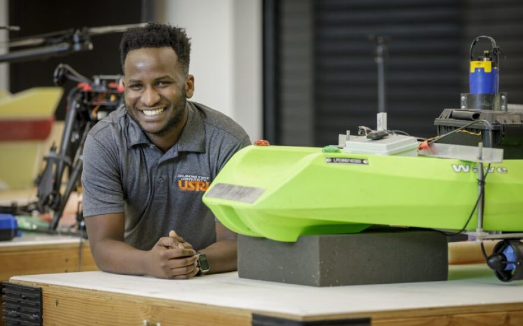

Executive
Muwanika Jdiobe, PhD
Founder & CEO
Aerospace engineer and president, driving the foundation’s vision and partnerships.

Learn more about our mission, vision, leadership, and the team driving STEM excellence.

Jdiobe STEM Foundation is a non-profit organization committed to advancing STEM education and opportunities for youth, especially in underserved communities. We believe in the power of science and technology to transform lives and societies.
A world where every student can excel in STEM, especially aerospace, driving innovation and solving global challenges.
To empower students in STEM through research, science fairs, scholarships, and aerospace education, bridging academia and industry.
Dr. Muwanika Jdiobe is a distinguished aerospace engineer and President of the Jdiobe STEM Foundation. His passion for innovation began in Uganda, where he built alternating current generators and simple helicopters using local materials during his secondary school years.
He holds dual Bachelor’s degrees in Aerospace and Mechanical Engineering, a Master’s, and a Ph.D. in Aerospace Engineering from Oklahoma State University. His research includes aeroacoustic characterization of coaxial ducted propellers and autonomous systems like MANUEL, an autonomous boat for environmental monitoring.
Currently, Dr. Jdiobe works at The Boeing Company as an aerospace engineer specializing in aircraft noise prediction and control. He is an active member of technical committees, including AIAA’s Aeroacoustics Technical Committee and NASA’s Acoustics Technical Working Group.
Through the Jdiobe STEM Foundation, he continues to inspire young engineers and scientists, demonstrating the power of STEM education to drive innovation and transformation.
Experienced professionals guiding strategy, technology, and programs across the foundation.
Founder & CEO
Aerospace engineer and president, driving the foundation’s vision and partnerships.

Chief Technology Officer
Leads technical direction, systems, and digital initiatives for our programs.
Projects Manager
Coordinates project delivery, timelines, and stakeholder engagement.

Join our mission to empower the next generation of STEM leaders. Whether you want to mentor, organize events, or support our outreach, your contribution makes a difference!
Apply to VolunteerThe Jdiobe STEM Foundation, established in 2024 by Dr. Muwanika Jdiobe, was founded with a vision to support high-achieving students in STEM fields through a variety of initiatives. Dr. Jdiobe, who holds a PhD in aerospace engineering from Oklahoma State University, aimed to promote academic excellence, foster diversity, and support career development through mentorship, internships, and networking.